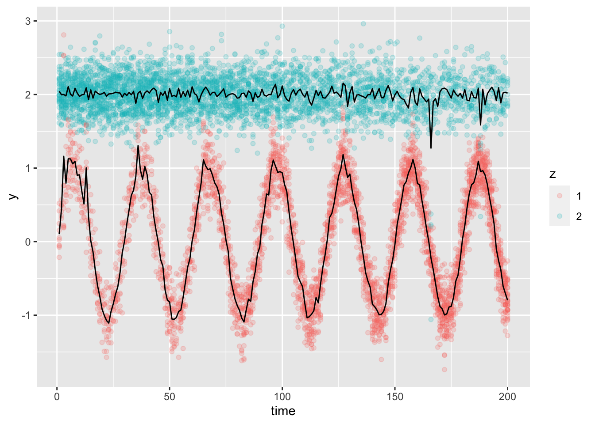

3 The method
Given a kernel \(w_h(t)\) with bandwidth \(h\), consider the following EM-inspired algorithm.
Here’s a high-level look at the algorithm. We’ll discuss the initialization, E-step, and M-step in the next subsections.
#' Kernel-smoothed EM algorithm
#'
<<y-param>>
#' @param K number of components
#' @param hmu bandwidth for mu parameter
#' @param hSigma bandwidth for Sigma parameter
#' @param hpi bandwidth for pi parameter
#' @param num_iter number of iterations of EM to perform
#' @export
kernel_em <- function(y, K, hmu, hSigma, hpi, num_iter = 100) {
num_times <- length(y)
d <- ncol(y[[1]])
mu <- array(NA, c(num_times, K, d))
Sigma <- array(NA, c(num_times, K, d, d))
pi <- matrix(NA, num_times, K)
resp <- list() # responsibilities gamma[[t]][i, k]
<<initialize-with-mclust>>
for (l in seq(num_iter)) {
<<E-step>>
<<M-step>>
}
dimnames(mu) <- list(NULL, paste0("cluster", 1:K), NULL)
dimnames(Sigma) <- list(NULL, paste0("cluster", 1:K), NULL, NULL)
dimnames(pi) <- list(NULL, paste0("cluster", 1:K))
list(mu = mu, Sigma = Sigma, pi = pi, resp = resp)
}3.1 Initialization
To initialize \((\mu_t,\Sigma_t,\pi_t)\) for \(t=1,\ldots, T\), we fit a separate Gaussian mixture model for each \(t\). We use mclust to do this.
###"initialize-with-mclust"###
# use mclust to get initial mu, Sigma, pi for each time t:
if (d > 1) stop("not yet implemented. Should call VVV rather than V")
for (tt in seq(num_times)) {
fit <- mclust::Mclust(y[[tt]], G = K, modelNames = "V")
mu[tt, , 1] <- fit$parameters$mean
Sigma[tt, , 1, 1] <- fit$parameters$variance$sigmasq
pi[tt, ] <- fit$parameters$pro
}usethis::use_package("mclust")## ✔ Adding 'mclust' to Imports field in DESCRIPTION
## • Refer to functions with `mclust::fun()`Let’s have a look at what the initialization does on our example data.
library(mclust)
num_times <- length(ex1$dat$y)
y <- ex1$dat$y
mu <- ex1$dat$mu
Sigma <- ex1$dat$Sigma
pi <- ex1$dat$pi
<<initialize-with-mclust>>
plot_data_and_model(y,ex1$dat$z, mu)## Package 'mclust' version 6.0.0
## Type 'citation("mclust")' for citing this R package in publications.
The means are jagged because we have not used any smoothness information yet.
3.2 E-step
Given an estimate of \((\mu,\Sigma,\pi)\), the E-step computes for each \(Y_{it}\) how “responsible” each cluster is for it. In particular, the responsibility vector \((\hat\gamma_{it1},\ldots,\hat\gamma_{itK})\) is a probability vector. It is computed using Bayes rule:
\[ \hat\gamma_{itk}=\hat{\mathbb{P}}(Z_{it}=k|Y_{it})=\frac{\hat \pi_{tk}\phi(Y_{it};\hat\mu_{tk},\hat\Sigma_{tk})}{\sum_{\ell=1}^K\hat \pi_{t\ell}\phi(Y_{it};\hat\mu_{t\ell },\hat\Sigma_{t\ell})} \]
###"E-step"###
# E-step: update responsibilities
if (d > 1) stop("not yet implemented. Should use mvtnorm::dmvtnorm()")
for (tt in seq(num_times)) {
phi <- matrix(NA, nrow(y[[tt]]), K)
for (k in seq(K)) {
phi[, k] <- stats::dnorm(y[[tt]],
mean = mu[tt, k, 1],
sd = sqrt(Sigma[tt, k, 1, 1]))
}
temp <- t(t(phi) * pi[tt, ])
resp[[tt]] <- temp / rowSums(temp)
}Let’s have a look at the responsibilities that we get using the initial parameter estimates:
resp <- list() # responsibilities gamma[[t]][i, k]
<<E-step>>Here are some from the 50th time point:
resp[[50]][1:4, ]## [,1] [,2]
## [1,] 1.000000e+00 7.040453e-18
## [2,] 4.061480e-22 1.000000e+00
## [3,] 3.281805e-28 1.000000e+00
## [4,] 1.050034e-29 1.000000e+00zest <- resp %>% purrr::map(~ max.col(.x))
plot_data_and_model(y, zest, mu = mu)
Looks reasonable! Notice that there are a small number of obviously incorrectly labeled points. My guess is this has to do with situations in which the labels of the clusters from mclust are swapped. Without anything tying together the separate clusterings at each time, there is no reason why cluster 1 and cluster 2 should have the same meaning across different times. However, after the M-step imposes smoothness, I believe this should straighten out these stray points.
3.3 M-step
In the M-step, we update the estimates of \((\mu,\Sigma,\pi)\):
###"M-step"###
# M-step: update estimates of (mu, Sigma, pi)
<<M-step-pi>>
<<M-step-mu>>
<<M-step-Sigma>>Define
\[ \hat\gamma_{\cdot sk}=\sum_{i=1}^{n_s}\hat\gamma_{isk}, \] which is an estimate of the number of points in class \(k\) at time \(s\), and define
\[ \tilde\gamma_{\cdot sk}=\sum_{s=1}^Tw_h(t-s)\hat\gamma_{\cdot sk}, \] which is a smoothed version of this estimate.
Then we estimate \(\pi\) as follows:
\[ \hat\pi_{tk}=\frac{\sum_{s=1}^Tw_h(t-s)\hat\gamma_{\cdot sk}}{\sum_{s=1}^T{w_h(t-s)n_s}}=\frac{\tilde\gamma_{\cdot tk}}{\sum_{s=1}^T{w_h(t-s)n_s}} \]
For \(\mu\):
\[ \hat\mu_{tk}=\frac{\sum_{s=1}^Tw_h(t-s)\sum_{i=1}^{n_s}\hat\gamma_{isk}Y_{is}}{\tilde\gamma_{\cdot tk}} \]
For \(\Sigma\):
\[ \hat\Sigma_{tk}=\frac{\sum_{s=1}^Tw_h(t-s)\sum_{i=1}^{n_s}\hat\gamma_{isk}(Y_{is}-\hat\mu_{sk})(Y_{is}-\hat\mu_{sk})^\top}{\tilde\gamma_{\cdot tk}} \]
Each of these quantities involves a summation over \(i\) before the smoothing over time. In each case we do the summation over \(i\) first so that then all quantities can be expressed as an array (rather than as lists). This should make the smoothing more efficient.
3.3.1 M-step \(\pi\)
For \(\pi\) estimation, we compute
\[ \hat\gamma_{\cdot sk}=\sum_{i=1}^{n_s}\hat\gamma_{isk}, \] And then we compute the kernel smoothed version of this:
\[ \tilde\gamma_{\cdot sk}=\sum_{s=1}^Tw_h(t-s)\hat\gamma_{\cdot sk}, \]
We are then ready to compute the following:
\[ \hat\pi_{tk}=\frac{\sum_{s=1}^Tw_h(t-s)\hat\gamma_{\cdot sk}}{\sum_{s=1}^T{w_h(t-s)n_s}}=\frac{\tilde\gamma_{\cdot tk}}{\sum_{s=1}^T{w_h(t-s)n_s}} \]
###"M-step-pi"###
# do summations over i:
# form T-by-K matrix summing resp_itk over i
resp_sum <- purrr::map(resp, ~ colSums(.x)) %>%
unlist() %>%
matrix(ncol = 2, byrow = TRUE)
resp_sum_smooth <- apply(
resp_sum, 2, function(x) stats::ksmooth(1:length(x), x, bandwidth = hpi)$y
)
pi <- resp_sum_smooth / rowSums(resp_sum_smooth)Here was an example that I used to figure out how to use the ksmooth() function:
xx <- 5 * sin((1:100) / 5) + rnorm(100)
plot(xx, type="o")
lines(stats::ksmooth(1:length(xx), xx, bandwidth = 5), col="red")
lines(stats::ksmooth(1:length(xx), xx, bandwidth = 20), col="blue")
3.3.2 M-step \(\mu\)
Next, we compute the estimate of \(\mu\). We again first compute the unsmoothed estimate and then apply smoothing to it:
\[ \sum_{i=1}^{n_s}\hat\gamma_{isk}Y_{is} \] This is then used in the following smoothed estimate:
\[ \hat\mu_{tk}=\frac{\sum_{s=1}^Tw_h(t-s)\sum_{i=1}^{n_s}\hat\gamma_{isk}Y_{is}}{\tilde\gamma_{\cdot tk}} \]
###"M-step-mu"###
# form T-by-K-by-d array summing resp_itk * Y_ij over i
y_sum <- purrr::map2(resp, y, ~ crossprod(.x, .y)) %>%
unlist() %>%
array(c(K, d, num_times)) %>%
aperm(c(3,1,2))
y_sum_smoothed <- apply(
y_sum, 2:3, function(x) stats::ksmooth(1:length(x), x, bandwidth = hmu)$y
)
for (j in seq(d)) {
mu[, , j] <- y_sum_smoothed[, , j] / resp_sum_smooth
}In the above code for y_sum, I convert a list of length \(T\), where each list element is a \(K\times d\) matrix, to a \(T\times K\times d\) array. To verify that this conversion is done correctly, I tried this small example:
a <- list(matrix(1:12, 4, 3), matrix(13:24, 4, 3))
a
a %>% unlist() %>% array(c(4,3,2))## [[1]]
## [,1] [,2] [,3]
## [1,] 1 5 9
## [2,] 2 6 10
## [3,] 3 7 11
## [4,] 4 8 12
##
## [[2]]
## [,1] [,2] [,3]
## [1,] 13 17 21
## [2,] 14 18 22
## [3,] 15 19 23
## [4,] 16 20 24## , , 1
##
## [,1] [,2] [,3]
## [1,] 1 5 9
## [2,] 2 6 10
## [3,] 3 7 11
## [4,] 4 8 12
##
## , , 2
##
## [,1] [,2] [,3]
## [1,] 13 17 21
## [2,] 14 18 22
## [3,] 15 19 23
## [4,] 16 20 243.3.3 M-step \(\Sigma\)
We start by computing
\[ \sum_{i=1}^{n_s}\hat\gamma_{isk}(Y_{is}-\hat\mu_{sk})(Y_{is}-\hat\mu_{sk})^\top \]
and then go on to compute
\[ \hat\Sigma_{tk}=\frac{\sum_{s=1}^Tw_h(t-s)\sum_{i=1}^{n_s}\hat\gamma_{isk}(Y_{is}-\hat\mu_{sk})(Y_{is}-\hat\mu_{sk})^\top}{\tilde\gamma_{\cdot tk}} \]
###"M-step-Sigma"###
# form a T-by-K-by-d-by-d array
# summing (Y_it - mu_t)*diag(resp_itk)*(Y_it - mu_t)^T over i
mat_sum <- array(NA, c(num_times, K, d, d))
for (tt in seq(num_times)) {
for (k in seq(K)) {
yy <- y[[tt]] - mu[tt, k, ]
mat_sum[tt, k, , ] <- crossprod(yy, yy * resp[[tt]][, k]) # YY^T * D * YY
}
}
mat_sum_smoothed <- apply(
mat_sum, 2:4, function(x) stats::ksmooth(1:length(x), x, bandwidth = hSigma)$y
)
for (j in seq(d))
for (l in seq(d))
Sigma[, , j, l] <- mat_sum_smoothed[, , j, l] / resp_sum_smooth3.4 Trying out the method
fit <- kernel_em(ex1$dat$y, K = 2, hmu = 5, hSigma = 5, hpi = 5, num_iter = 20)
zest <- fit$resp %>% purrr::map(~ max.col(.x))
plot_data_and_model(ex1$dat$y, zest, fit$mu)
fit <- kernel_em(ex1$dat$y, K = 2, hmu = 50, hSigma = 50, hpi = 50, num_iter = 10)
zest <- fit$resp %>% purrr::map(~ max.col(.x))
plot_data_and_model(ex1$dat$y, zest, fit$mu)